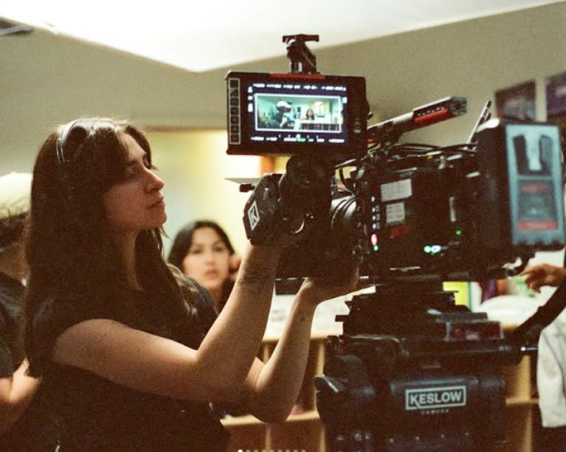

About
Sofía Abud is a multidisciplinary artist specializing in atmospheric photography and ambient music. Based in Mexico City, her work explores the intersection of light, shadow, and sound, aiming to capture fleeting moments of cinematic stillness.
With a background in both fine arts and audio engineering, her approach is highly technical yet deeply emotional, avoiding artificial embellishments in favor of raw, stylized naturalism.